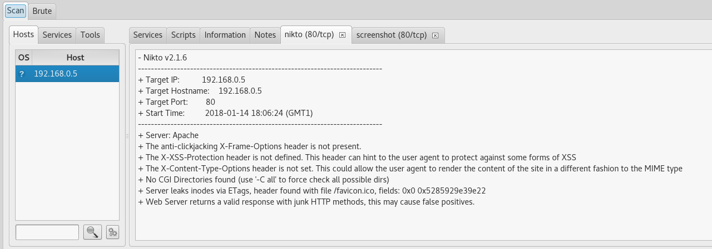

### E-Security 1 - Security Scanning - 2LE #### Wintersemester 2019/2020 FH JOANNEUM
### Wozu? - Einfache Möglichkeit um Übersicht über Netzwerk/Serverlandschaft zu bekommen - Schwachstellen, Patchlevel, ... - Notwendig für Compliance - Im Rahmen des Development Prozesses um Schwachstellen früh zu erkennen
### Varianten? - Durchgeführt von interner Security Abteilung oder als "Aufklärung" von extern - mit/ohne Credentials - Segmentation - Verschiedenste Ziele/Ebenen
### Ebenen? - Applikation - Input validation, Methoden, Aufbau/Stabilität der Applikation, ... - Netzwerk - Poisoning, WLAN, VLAN, VOIP, ... - Web - Encryption/Cipher, DOS, ...
### Penetration Test 1 - "[...] authorized simulated attack on a computer system [...]" - Meist über mehrere Wochen - Kick off, "Permission to Attack", Notfallkontakt, Abschlussbericht - "Profi-Hacker/Unternehmen" - Black/Grey/White Box Ansatz
### Penetration Test @ PCI - 1x pro Jahr Pen-Test aller "customer facing" Schnittstellen - Fix für >= Medium - <a href="https://pci.qualys.com/static/help/merchant/vulnerabilities/pci_exceptions.htm">automatic failures</a> - 1x pro Quartal interner Scan - Fix für >= High/Critical - Unmittelbar bei "significant change", Pre-Production Scan
### Black/Grey/White Box - Black Box: Keine Kenntnis über interne Abläufe der Applikation - Grey Box: Dokumentation über Schnittstellen vorhanden - White Box: Detailwissen über Applikation (Sourcecode) - Ablauf/Methoden der Applikation bekannt - Ggfs Nachteil: man "Testet um Fehler herum"
### Hacking Prozess
### Hacking Prozess - Reconnaissance - Auswahl des "Opfers"/"weakest link" - Aktiv/Passiv - Aktiv: man versucht dem System vorsichtig Informationen zu entlocken - Passiv: nur zuhören
### Hacking Prozess - Reconnaissance - Information Gathering - So viel Details wie möglich über das "Opfer" finden - User Accounts - Laufende Prozesse - Offene Ports - IP/DNS

### Hacking Prozess - Scanning - meist Portscanner (zB. nmap) - erkennen des System/Software (OS/service detection) - schwierig hierbei unerkannt zu bleiben
### Hacking Prozess - Gaining access - ausnutzen von (bekannten) Schwachstellen und erlangen einer "root shell" - bekannteste Software: Metasploit
### Hacking Prozess - Maintaining access - "Installieren"/aufbauen eines Zugangs zum System auch wenn Schwachstelle nicht mehr existiert - über längeren Zeitraum hinweg Informationen sammeln
### Hacking Prozess - Clearing tracks - Entfernen von Beweisen - Log files, timestamps, Prozess, ... - Erkennen von Mustern somit erschwert
### Hacking Prozess - Reporting - Erstellen detaillierter Analysen über Prozess - Auflisten von Schwachstellen - Auflisten von erlangten Informationen - POC
### Begriffe 1: ARP Poisoning/Spoofing - Lookup IP->MAC - gefälschte ARP Responses überlasten ARP Table im Switch - Pakete landen bei falschem Ziel - Optimal für MITM Attacken (zB. Ettercap)
### Begriffe 2: 0-day exploit/vulnerability - Vulnerability: Bislang unbekannte Schwachstelle ohne verfügbaren Patch - Exploit: Applikation welche 0-day Vulnerability ausnutzen kann - Beispiel: Stuxnet (4x Windows), RSA Hack (Flash Player)
### Begriffe 3: CVSS (Common Vulnerability Scoring System) - Scoring von 0,0 bis 10 - Formel/Berechnung ua. auf Basis von CIA, Verbreitung und Ausnutzbarkeit - <a href="https://nvd.nist.gov/vuln-metrics/cvss/v3-calculator">Simulator</a> - <a href="https://www.first.org/cvss/examples">Beispiel</a>
### Begriffe 3: CVE (Common Vulnerabilities and Exposures) - Datenbank von Vulnerabilities - Verwendung von eindeutigen IDs - "Bewerbung" um ID notwendig. Gremium entscheidet über Vergabe. - Beispiele: - <a href="https://cve.mitre.org/cgi-bin/cvename.cgi?name=cve-2014-0160">HeartBleed</a> - <a href="https://nvd.nist.gov/vuln/detail/CVE-2017-5715">Spectre</a>
### Security Scanner - On-premises - Nessus - OpenVAS - Nexpose - Cloud/Appliance - Qualys - ...
### nmap Optionen und Scan <pre><code data-trim data-noescape> -sS: TCP SYN (Firewall) -sV: Probe open ports to determine service/version info --reason: Display the reason a port is in a particular state </code></pre> <pre><code data-trim data-noescape>josef@joseftp:~$ sudo nmap -sS -sV --reason 192.168.0.5 Starting Nmap 7.12 ( https://nmap.org ) at 2018-01-13 21:38 CET Nmap scan report for 192.168.0.5 Host is up, received arp-response (0.012s latency). Not shown: 998 closed ports Reason: 998 resets PORT STATE SERVICE REASON VERSION 22/tcp open ssh syn-ack ttl 64 OpenSSH 7.4p1 Debian 10+deb9u2 (protocol 2.0) 80/tcp open http syn-ack ttl 64 Apache httpd MAC Address: 7C:66:9D:xx:xx:xx (Texas Instruments) Service Info: OS: Linux; CPE: cpe:/o:linux:linux_kernel</code></pre>
### Security Scanner: Nessus - Für "Home Use" gratis - vordefinierte Profile (ua. für Meltdown/Spectre) - simple Installation/Update - Verschiedene Update Feed Varianten (kostenlos, 0-day, ...)
### Security Scanner: OpenVAS - OpenSource - umfangreiche Konfiguration via Web UI - einfaches Update via CLI Interface
### Security Scanner: Nexpose - Umfangreiche Security Suite - Gratis für 30 Tage - Auch als Cloud-based Variante
### Security Suites - Meist Linux Distribution mit vorinstallierter Software - Bekannteste Beispiele: - Metasploit - Kali Linux - Black Arch - Cyborg Linux
### Kali Linux (1) - Linux Distribution basierend auf Debian/Ubuntu - Voll gepackt mit Security/Pen Testing Tools - Verfügbar als ISO und VM
### Kali Linux (2) - Umfangreicher Blog/Tutorials - Unterteilungen in Tasks/Aufgaben
### OWASP Top 10 2017 und Exploit-DB - <a href="https://www.owasp.org/index.php/Category:OWASP_Top_Ten_2017_Project">OWASP</a> - <a href="https://www.exploit-db.com/">exploitdb</a> - <a href="https://www.exploit-db.com/exploits/45638/">libssh</a> - <a href="https://www.kitploit.com/">Kitploit</a> - <a href="https://www.kitploit.com/2019/11/vscan-vulnerability-scanner-tool-using.html"></a>
### E-Security 1 - Security Scanning #### Wintersemester 2019/2020 FH JOANNEUM
### Quellenverzeichnis - Hacking Prozess: https://www.tutorialspoint.com/ethical_hacking/ethical_hacking_process.htm - Pen Test: https://en.wikipedia.org/wiki/Penetration_test